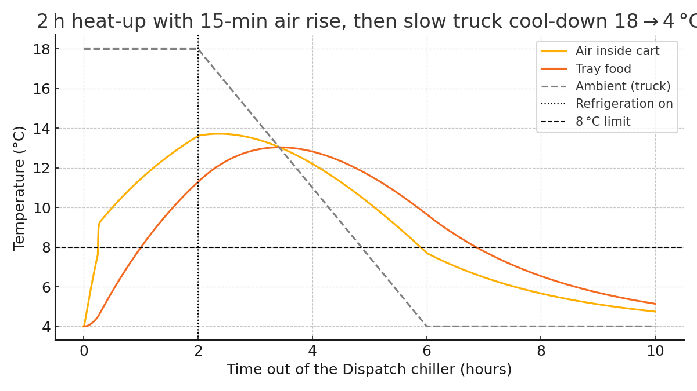

Two methods. Both fail.
The airline catering industry has two common ways to hold food temperature inside a cart. Regulators are looking harder at both, and audits keep reaching the same conclusion.
1. Refrigerated vehicles
- Chills the outside of an insulated cart — the food barely notices
- High maintenance and running costs
- Long recovery every time the doors open between flights
- No due-diligence recording
- Adds weight and reduces payload
2. Dry ice
- High cost, and rising
- 35–50% wastage
- Inconsistent availability
- Uneven chilling — tops freeze, bottoms stay warm
- No due-diligence recording
Why cold air never gets in
An airline cart is a well-engineered insulated box on wheels. When the doors are shut it will hold cold air in — but it equally blocks refrigerated air from getting in.
So a truck cools the air around the carts, not the product inside them. Even in favourable conditions a loaded truck can take many hours to reach 4°C, and food already warm in a cart can take up to six hours to come back down to a safe temperature.
Then a high loader opens its doors at the aircraft, the cold air falls out, and the recovery clock starts again — roughly forty minutes, several times a shift.

Regulators have noticed
Regulatory bodies are paying increasing attention to delivery temperatures at the vehicle. Audits have repeatedly shown that most truck refrigeration does not work.
Loss of chill chain in harsh environments is now an active topic for both airlines and caterers — and the operator holding no temperature records is the one carrying the risk.
Book a 30-day paired trial
Fit ChillRail to one truck, leave an identical truck unmodified, and run both on live routes for 30 days. Fuel, service calls, pull-out temperatures and cold-chain compliance all become your own audited data before you commit to anything.
Arrange a trial